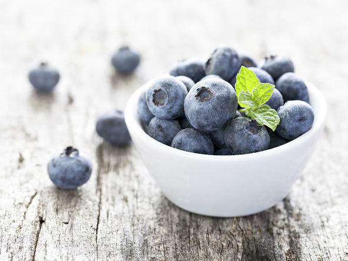
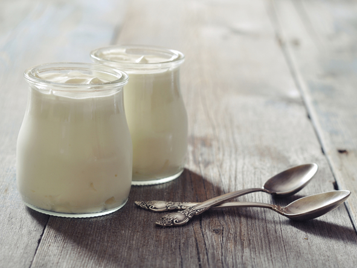
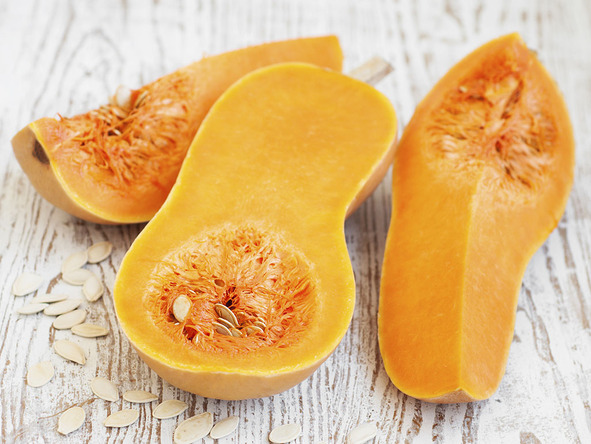
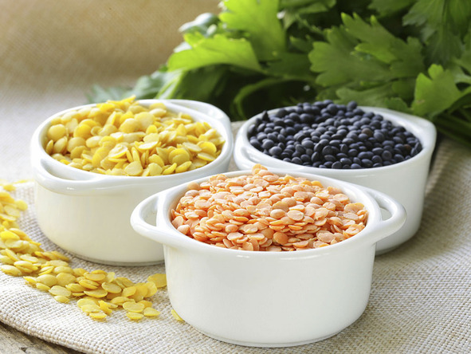
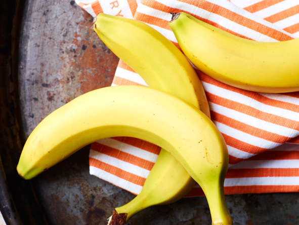
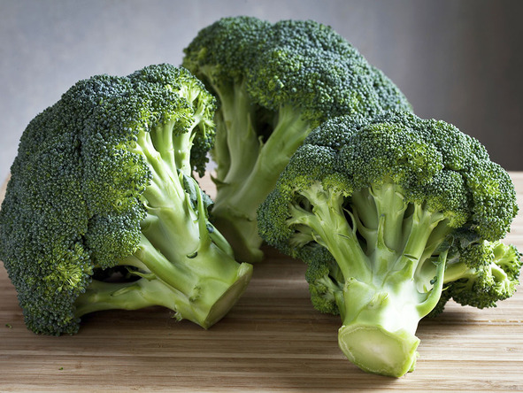
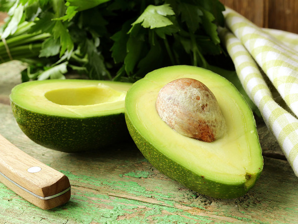
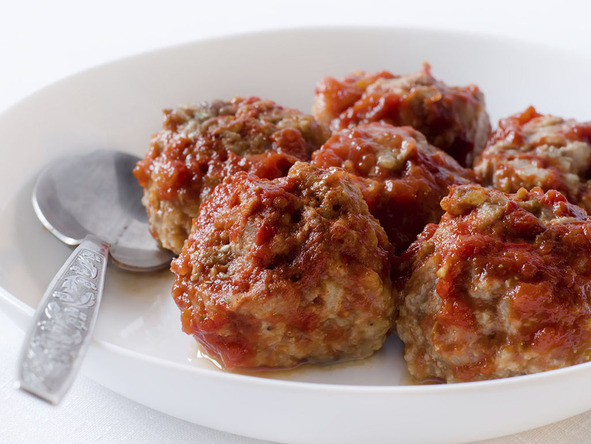
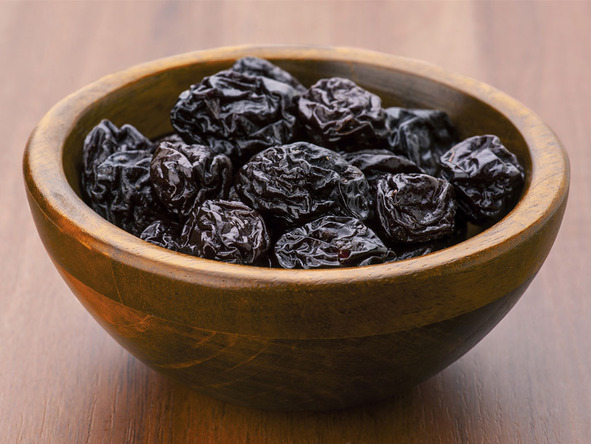
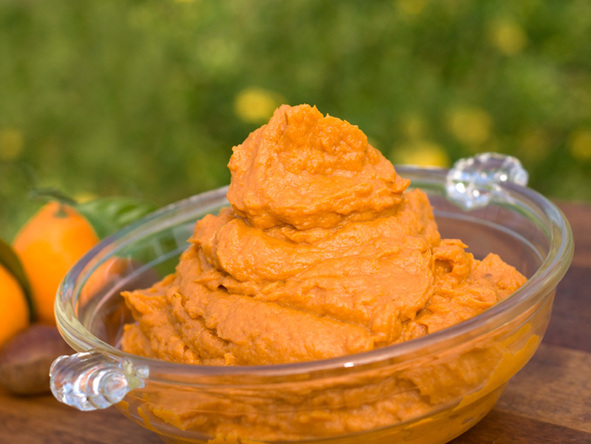

¿Qué tienen en común los arándanos, la calabaza, las lentejas y el yogur? Todos están entre los 10 alimentos más recomendados por médicos y nutriólogos como los más nutritivos y sanos para tu bebé. Entérate por qué.
Arándanos
Los arándanos azules (blueberries) contienen grandes cantidades de antioxidantes y flavonoides que benefician los ojos, el cerebro y el tracto urinario del bebé. Agrégalos a la comida, machácalos para hacer un puré y prueba ofrecérselos a tu bebé mezclados con el yogur natural.
Yogur
El cremoso yogur es rico en calcio, vitamina D y lactobacilos que benefician a los intestinos. Tu bebé puede consumirlo entre los 4 y 6 meses, mucho antes de que pueda consumir la leche de vaca. Asegúrate de darle yogur de leche entera, que no solo es más sabroso, sino que contiene las calorías que los bebés necesitan.
Calabaza
¿Quieres proteger sus ojitos? Las dulces calabazas de pulpa anaranjada y cáscara dura (butternut, acorn, pumpkin) pueden aportar grandes beneficios, pues son excepcionalmente ricas en beta-caroteno (vitamina A), y reconocidas por sus beneficios para la vista.
Lentejas
Los frijoles, las lentejas y otras leguminosas aportan mucha proteína magra y fibra. Pero a diferencia de los frijoles grandes, las pequeñas lentejas hervidas se convierten en una especie de pasta que las hace de fácil consumo para los bebés. Y eso significa ¡que no las tienes que machacar!
Plátanos
El plátano proporciona una buena fuente de potasio y también contienen las vitaminas B6 y C, calcio y hierro. Es además muy práctico, porque lo puedes cargar en la bolsa y dárselo a tu bebé con una cucharita cuando todavía es muy pequeño (después, él mismo lo podrá sostener para comérselo).
Brocoli
Este vegetal contiene fibra, folato y calcio, y además puede prevenir el cáncer. Preséntale el acentuado sabor del brócoli a tu bebé desde el inicio y lo estarás alentando a una vida entera de preferencia por las hortalizas.
Aguacate
Muchas mamás de BabyCenter eligen el aguacate como primer alimento para sus bebés y saben por qué. Esta fruta cremosa es rica en grasas saludables y propicia el desarrollo cerebral.
Carne
No tienes que alejar a tu bebé de las carnes rojas, pues son una buena fuente de zinc y hierro. Elabora un caldo hasta que la carne esté suave, suculenta y fácil de desmenuzar con un tenedor.
Ciruelas
Las "ciruelas pasa" pueden no sonar muy glamorosas, pero esta humilde fruta está llena de fibra que ayuda al funcionamiento de los intestinos. Tu bebé puede padecer estreñimiento cuando empiece a comer alimentos sólidos, lo cual es un gran cambio para su sistema. Agrega ciruelas machacadas a su dieta para ayudar a su digestión.
Camote, boniatos o batatas dulces
Los camotes son unos de los alimentos más populares que suelen darse a los bebés que empiezan a comer sólidos. A los pequeños les gusta su dulce sabor y textura.
Estos vegetales coloridos son ricos en beta-caroteno (que es un nutriente esencial y el pigmento que le da el típico color anaranjado o amarillo a una gran cantidad de frutas y verduras), vitamina C y minerales, incluyendo hierro y cobre.